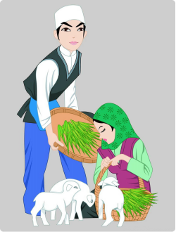

民族文化符号
东乡族
是中国甘肃省的一个少数民族，民族语言属阿尔泰语系蒙古语族，没有本民族的文字，大多数东乡族都兼通汉语，汉文为东乡族的通用文字，信仰伊斯兰教逊尼派。
东乡族主要聚居在甘肃省临夏回族自治州境内洮河以西、大夏河以东和黄河以南的山麓地带，其余分别聚居在和政县、临夏县和积石山保安族东乡族撒拉族自治县，在甘肃的兰州市、定西地区和甘南藏族自治州等地，还散居着一小部分东乡族。新中国成立后，部分东乡族从甘肃迁徙到新疆居住。
根据《中国统计年鉴-2021》，中国境内东乡族的人口数为774947人。
了解更多

民族特色美食
羊肉泡馍
罗婆粥
搅团
清汤羊肉
纳西族
纳西族（Naxi minority）是中国56个民族之一，为云南特有民族之一，绝大部分居住在滇西北的丽江市，其余分布在云南其他县市和四川盐源、盐边、木里等县，也有少数分布在西藏芒康县。
纳西族有本民族语言，纳西语属于汉藏语系藏缅语族彝语支 。纳西族在艺术方面独树一帜，其诗文、绘画、雕塑、乐舞艺术名扬古今中外。
纳西族中家族组织普遍存在，是一个聚居程度较高的民族，泸沽湖地区纳日人（摩梭人）的亲族组织保持着比较古老的特征 ，纳西文化受汉文化影响较深。
根据《中国统计年鉴-2021》，中国境内纳西族的人口数为323767人。
了解更多
民族特色美食
羊肉泡馍
罗婆粥
搅团
清汤羊肉